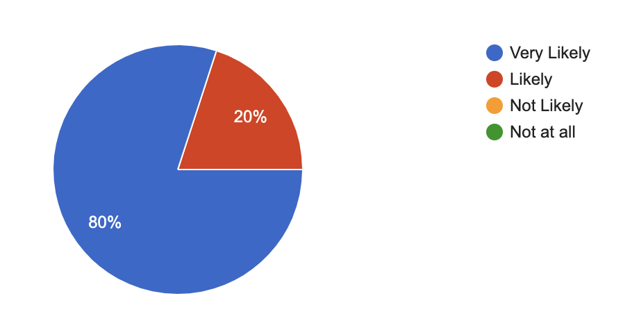
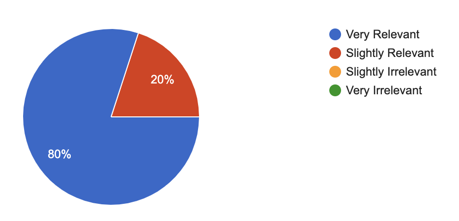
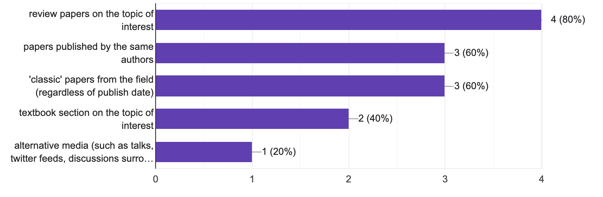

CitePaL - User Study
Overall Study Description Here
Would you use a web-based application/plug-in to visually search for
background papers when doing academic literature search?

When using this tool, did the suggested papers seem relevant to you?

What information did you find useful in this application?
What information did you wish you could see when using this application?
When trying to gain background on a paper of interest, do you prefer to read:
